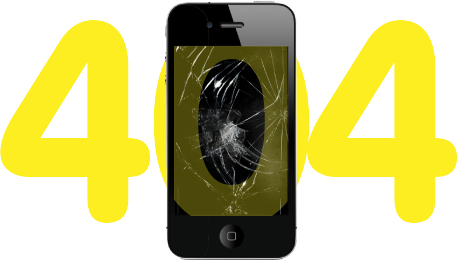

Запчасти к мобильным
телефонам и планшетам

Ошибка 404 означает, что страница, которую Вы
запрашиваете, не существует.
Возможно, она была удалена, возможно, Вы набрали неправильный адрес.
© 2015 SotParts. All rights resrved.
Разработано в студии